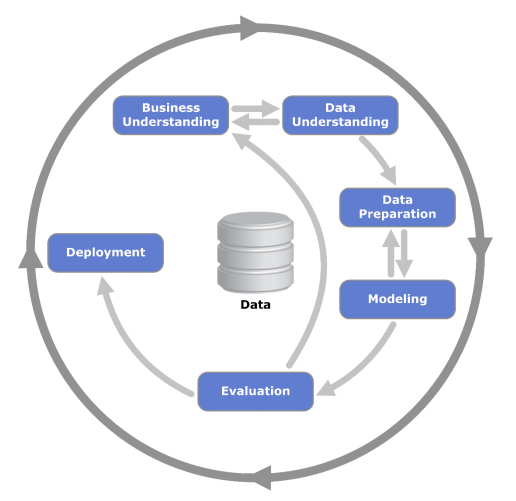
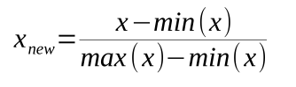
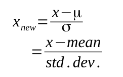
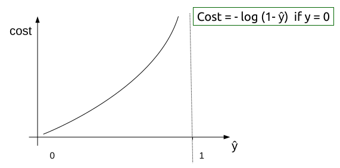
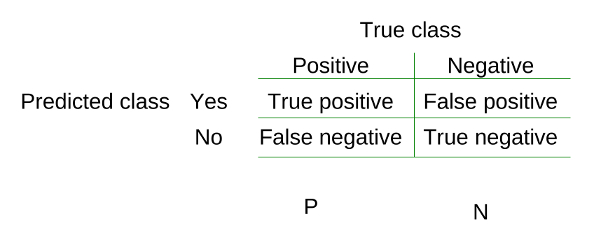
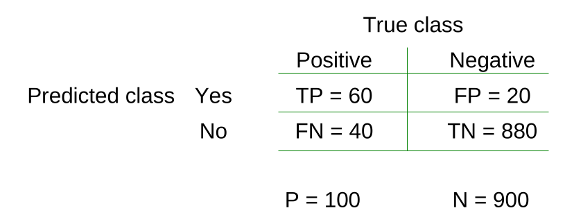

Data Mining and Machine Learning
Table of Contents
- 1. On Exam
- 2. Concepts
- 3. Use Cases
- 4. ML
- 5. Data Mining Process
- 6. Supervised v Unsupervised Learning
- 7. Types of problems
- 8. Linear Regression
- 9. Multiple Linear Regression
- 10. Polynomial Regression
- 11. Decision Trees
- 12. Nearest Neighbour Classification
- 13. Logistic Regression
- 14. ROC Graphs
- 15. Clustering
- 16. Using R
- 17. Exam Questions
- 18. Delete at the end
1 On Exam
- For Logistic Regression
- Explain the Sigmoid Function and Cost Function
2 Concepts
- Data Science: Guide extractions of data
- Data Mining: extraction of knowledge from data
- Machine Learning: algorithms that learn from data
3 Use Cases
3.1 Predicting Churns
3.2 Advertising
3.3 Marketing
3.4 Fraud Detection
3.5 Spam Filtering
3.6 Recommendations
3.7 Micro-transactions
3.8 Big Data (not covered during the course)
3.9 Data as a strategic asset
4 ML
4.1 ML Data
- Instances: Like objects (e.g customer)
- Input: Is a single relational table, often a csv file
- Rows: Are instances
- Columns: Are features (aka variables)
4.2 Features
- Can be numerical or categorical
- Any standard attribute, such as: age, height, gender, etc.
- Nominal features are not ordered, such as colours (cannot determine if red is higher than blue for example)
- Numerical: any numerical value, e.g. age, income
- Nominal: e.g. make of car. Unordered
- Ordinal: e.g. high, medium, low. Ordered
4.3 Models
- An example of a model is a Decision Tree
- A Decision Tree of size 1 is referred to as 1R, i.e. there is only one
IF, for instance: if number of calls tech support > 10 then churn
- A Decision Tree of size 1 is referred to as 1R, i.e. there is only one
- Data Mining Algorithm crunches data that in turn provides the Data Model
4.4 Model building
- Data > Data Mining Algorithm > Model
4.5 Prediction
- Data > Model > Result
5 Data Mining Process
5.1 Cross Industry Standard Process for Data Mining (CRISP DM)

5.2 Business Understanding
- What we are trying to solve
5.3 Data Understanding
- What are the costs of the data
- What data is available
- What data is required
5.4 Data Preparation
- Clean the data before usage
- Deal with missing fields
- Deal with wrong types
5.5 Modeling
- Determining the model and any parameters
5.6 Evaluation
- Evaluation of the model before deployment
- Another iteration might be needed, so go back to business requirements
5.7 Deployment
- The model is deployed
- Might need to change stack from R or Python to large scale deployment (e.g. Java + Hadoop)
- Pass from Data Scientists to Data Science Engineers
5.8 Notes
- CRISP is not an SDLC
- It is exploration based
- Outcomes are far less predictable
6 Supervised v Unsupervised Learning
6.1 Supervised
- Uses existing data
- We can use a set of existing training data
- Groups are predefined, or are simply known
6.2 Unsupervised
- Not a predefined set
- No training data
- Natural grouping
7 Types of problems
7.1 Regression
- Value estimation
- Supervised technique
7.2 Classification
- Present a set of classified examples
- Expected to learn and be able to classify unseen examples
- The learning scheme/algorithm is presented with a set of classified examples.
- Expected to learn and be able to classify unseen examples
- Logistic Regression is classification based as well
- Produces a "Probabilistic Classifier"
- Produces a model in which an individual is placed into a particular group
7.3 Clustering
- Find groups of instances that cluster or belong together
- Identify clusters
- No training set given
- Success is often subjective, it depends which clusters are more important to the user
- Can be followed by classification
- Clusters can then be treated as classes and a classification algorithm can be used
7.4 Data Reduction/Feature Selection
- Often used to discard irrelevant data
- Especially handy when there is a lot of data
- Sometimes introduced for performance reasons
- Often performed by the algorithm itself
8 Linear Regression
8.1 Definition
- Regression analysis is used to predict the value of one variable (the dependent variable) based on other variables (the independent variables)
8.2 Line of best fit
- Minimize the sum of the squares of the errors (SSE aka RSS)
- The method used is called Least Squares Method: Produces a straight line that minimizes the sum of the squares of the errors
8.3 What are residuals
- Residuals are know as errors
- Its the difference between the point and the line, aka difference between the predicted value and the actual value of y
8.4 Probabilistic classifier
- Outputs a probability, value between 0 and 1, usually used for binary data.
- To turn into a deterministic classifier we set a threshold (can use many thresholds)
8.5 Deterministic classifier
- Is either positive or negative, it does not use probability
- Allows to fully determine the value of the dependent variable from the independent variable
8.6 Correlation Coefficient (r)
- If the coefficient is close to +1 then its a strong positive relationship
- If the coefficient is close to -1 then its a strong negative relationship
- If the coefficient is close to 0 then there is no correlation
8.7 Coefficient of Determination R2 (r squared)
- Gives a percentage of variation of y explained by the variation in x
8.8 Equation
b = (nΣxy - (Σx) (Σy)) / (nΣx² - (Σx)²)
a = (Σy - b(Σx)) / n
y = a + bx
8.9 Conditions
- The probability distribution of errors is normal
- The mean of the errors is 0
- The standard deviation of the errors is a constant regardless of the value of x
- The value of the error associated with any particular value of y is independent of the error associated with any other value of y
9 Multiple Linear Regression
9.1 Exploration
- Use scatter plots to find fitting pairs
- Note that a visual lack of correlation does not mean that there is no correlation between the predictor and the output
9.2 Feature reduction
- It might be worthwhile to remove the amount of variables for performance sake
- If two predictors are strongly correlated then one can be possibly removed
- If a predictor has a low variance then it has a low meaning as well
9.3 Evaluation
- Mean of the squares of the errors (MSE): good but not great
- Root mean square error (RMSE): the right choice
9.4 Statistical Significance of Predictors
- The lower the p value the more significant the predictor is
- So if the p valus is 0.05 then the predictor has a 95% significance
- So if the p valus is 0.001 then the predictor has a 99.9% significance
9.5 Prediction Interval
- Gives the range of the predicted dependent variable, as opposed to a fixed number.
- This is based around given observations
9.6 Confidence Interval
- Same as prediction interval, but gives back a range based around a mean of the observations
10 Polynomial Regression
10.1 Definition
- Polynomial Regression is essentially performing a linear regression with a polynomial, such as x2.
- Linear regression with extra non-linear terms
- When we convert the original data with a polynomial then we can perform linear regression
10.2 Orthogonal Polynomial
- Adding too many polynomials can lead to a singularity problem, and hence we use orthogonals
- In R we use the
poly()to find the best polynomial terms to use
10.3 Over fitting with Orthogonal Polynomials
- Starts to fit the noise variables and thus can provide invalid predictions
- Prevention: Cross Validation or Regularization
Cross Validation
- Build different models and see which one fits most by changing the degree of the polynomial
- The degree of the polynomial is known as the Hyperparameter
- Best Suited Hyperparameter: Found from building the data and validating it
Regularization
- Chooses lower complexity polynomials over more complex ones
- It does this by adjusting the cost function, i.e. increase cost for higher polynomial terms
11 Decision Trees
11.1 Definition
- Class: feature that best separates the target variable
- Each must contain an attribute that can be classified (e.g. 'high', 'low')
- We want to build a model that predicts this attribute (class)
11.2 When is the algorithm finished?
- When all data in the node is of the same class
- No remaining features to distinguish
- The tree has grown to a predefined size
11.3 Advantages
- Good all purpose classifier
- Can handle numerical and categorical features
- Can handle missing data
- Fast
11.4 Disadvantages
- Large trees are hard to read
- Large trees can look counter intuitive
- Small changes in the training data can severely modify the model
- All splits are parallel to the axis', issues with certain modeling shapes
- Easy to overfit data
11.5 How to apply
- A decision tree is a set of rules of the
IF THENtype - Traverse from the root of the tree through the leaf nodes
11.6 Algorithm
- Considers all splits before choosing the best ones
- The choice is made based on the level of a node's impurity
11.7 Node Impurity
- Three measure are: GINI Index, Entropy and Misclassification Error. We focus on GINI
- Impure nodes are inhomogeneous, pure are homogeneous
- If impurity is 0, then that means that the node has all class instances of the same type
- Calculating GINI:
GINI (n) = 1 - Σ [P (c | n)]2
P (c|n) is the probability of an instance in a node n being of class c
Example:
If a node n consists of 2 instances of class C1 and 4 instances of C2 then:
P(C1|n) is 2/6 = 1 - (2/6)2 - (4/6)2 = 0.278
P(C2|n) is 6/6 = 1 - (6/6)2 - (0/6)2 = 0
- GINI value is used to find node splits
- Weighted Average of GINI of the child nodes is used to find the best split. Basically nodes with higher observation count are weighted higher
11.8 Splits
- Binary: Budget < 1m, Budget >= 1m
- 3-way split: Budget < 1m, Budget in between 1m and 2m, Budget >= 2m
- Semi-open Ranges:
< 10K
[10K, 20K) aka 10k to 20k (20k is exclusive)
[20K, 30K)
>= 30K
- Nominal Binary:
- {family, sports} and {luxury}
- {family, luxury} and {sports}
- Nominal 3-way:
- {family}{sports}{luxury}
- Ordinal Binary:
- {low, medium}{high}
- {low}{medium,high}
11.9 Overfitting
- Noise points can negatively influence the data
- Continually splitting can lead to overfitting
- Overfitting will cause to for the Decision Tree to perform poorer
- Overfitting can cause over complicated trees
- Prevent overfitting with:
- Pre-pruning: Early stopping. Stop it before reaching a certain bucket size, or stop if GINI does not decrease.
- Post-pruning: Grow the tree to max value. Trim the bottom of the tree. If error is smaller after trimming then replace the sub-tree with a single leaf node.
- Bucket size and Depth of the tree are meta-parameters. They can only be obtained by running the model on unseen data (holdout data)
12 Nearest Neighbour Classification
12.1 Definition
- An instance based learner
- Uses k "closest" points for performing classification
- There is no trained model
- No training but slow classification
- Uses Euclidean distance to compute distance
√Σ(p - q)2
- Take the majority vote of the k-nearest neighbours or weight the vote according to distance
12.2 Choosing the value of k
- Too small and it will be sensitive to noise
- Too large and it will include other classes
- Usually k is roughly the same as √n (where n is the instance count)
12.3 Scaling
- Is a necessity, since some values might have different ranges
- E.g. Age could be 1 to 80, but income is say 10 000 - 120 000. But both need to fit on the same plane
- Min-Max Normalization: Scales between 0 and 1 
- Z-score standardization: Count the number of standard deviations from the mean. For a normal distribution, 95% of values are within 3 standard deviations of the mean 
12.4 Handling nominal values
- Convert them to numbers:
- Green = 1
- Blue = 0
- So then (0,0) is red, green is (1, 0), blue is (0, 1)
12.5 Handling ordinal values:
- Temperature:
- Hot = 1
- Warm = 0.5
- Cold = 0
13 Logistic Regression
13.1 Definition
13.2 Binary Classification
- x is one or more attributes
- y is in the range of 0 to 1
- Example:
- x is the size of tumor
- y - malignant? (yes or no)
- ŷ (or y') - predicted value of y
13.3 Discrete Classifier
- Outputs a predicted class rather than a probability
13.4 Probabilistic Classifier
- Outputs probabilities of an instance belonging to a particular class
- ŷ is between 0 and 1
- ŷ is the probability of a positive (e.g. likelihood of an illness)
13.5 Sigmoid Function
- Normally the date is in the range of -∞ to +∞. The sigmoid function gives values between 0 and 1
- So now if ŷ is 0.7 then the there is a positive probability that something will occur with a 70% likelihood
- Set a threshold for the prediction, so that if ŷ > threshold then predict y as 1.
- A threshold converts a probabilistic classifier into a discrete classifier
13.6 Decision Boundary
- Is the line that separates the classes
- For non-linear values (e.g. circular) use non linear terms
13.7 Finding parameters
- Same as linear regression this is done by optimizing the cost function
- Optimize the cost function
- Cost function is sometimes called an objective function
- n: Number of factors
- m: Number of training instances
- yi: y values for the training set
- ŷi: Predicted y values for the training set
- a, b1, b2, …: Parameters
- Cost function (remember that ŷ is between 0 and 1)
cost (ŷ, y) = -log ŷ if y = 1

cost (ŷ, y) = -log (1 - ŷ) if y = 0

- Interpretation
- If y = 1 and we predict a value close to 0, then there is a heavy cost (penalty)
- If y = 0 and we predict a value close to 1, then there is also a heavy cost (penalty)
13.8 Linear models are hyperplanes
- Decision boundary for two-class logistic regression is where probability equals 0.5
- Linear => logistic regression can only separate data by linear/flat hyperplanes
13.9 Summary
- Find the equation of the line that best separates the classes
- z = a + b1 * x1 + b2 * x2 ….. + bn + xn
- Minimise the function above by using the cost function on it
- To predict a class:
- Calculate the values of z given above
- Find g(z) where g is the logistic function (sigmoid function)
- This gives the probability (of a positive)
14 ROC Graphs
14.1 Definition
- ROC Graphs are drawn using True Positive Rates and False Positive Rates to summarize confusion matrices.
14.2 Confusion Matrix
- Explanation 
- Example 
14.3 True Positive Rate (aka Sensitivity, Hit Rate, Recall)
- True positive divided by all positives
- TP / P = TP / (TP + FN)
- So for the example above: 60 / 100 = 0.6
14.4 Precision
- True positives / All Instances classified as positive
- TP / (TP + FP)
- So for the example above: 60 / 80 = 0.75
14.5 Accuracy
- Correct classification / Total instances
- (TP + TN) / (P + N)
- So for the example above: 940 / 1000 = 0.94
14.6 False Positive Rate
- Negatives incorrectly classified / Total negatives
- FP / N = FP / (FP + TN)
- So for the example above: 20 / 900 = 0.02
14.7 Definition
- ROC graphs are 2D charts with TPR on the y axis and FPR on the x axis
- Depicts trade-offs between benefits (true positives) and costs (false positives)
14.8 ROC Space
- Each point in the ROC space corresponds to a discreet classifier
- (0, 0) - never classify as positive
- (1, 1) - classifying everything as positive
- (1, 0) - perfectly incorrect classifier
- (0, 1) - perfect classifier
- Lower left are conservative, maker few positives and few errors
- Upper right less conservative, make more positive classifications and more errors
- Line y = x is a random choice
- Bottom right performs worst, flipping it will produce a useful classifier (if it is dominant)
14.9 Classifiers
- Use a threshold to turn a Probabilistic Classifier into a Discrete Classifier
- If the probability or score is above the threshold then the classifier outputs Y, otherwise N
- Each threshold now produces a distinct point in ROC space
- Varying the threshold for a probabilistic classifier produces a ROC curve
14.10 Recap
- Discrete Classifier - point in ROC space
- Probabilistic Classifier - line in ROC space
14.11 Algorithm
- Go by the threshold score
- Start at 0, 0
- Then with every positive classifier move up with the threshold
- With every negative classifier move by one right
- So if you have 0.1 to 1 on both x and y axis' then you need a total of 20 classifiers to fill up the curve
14.12 Area Under Curve (AUC)
- Ranges between 0 and 1
- Area for a random guess is 0.5
- The bigger the area, and the more it goes up towards the left side and up, the higher the probability that a random observation will be classified as positive
15 Clustering
15.1 Definition
- Is used when classes cannot be predicted but there are visible groupings of data
- These clusters presumably reflect some sort of mechanism that causes for the data to group together more than to other clusters
- Clusters can be:
- Disjoint vs overlapping
- Deterministic vs probabilistic
- Flat vs hierarchical
15.2 k-means algorithm
- Select K centroids (K rows chosen randomly)
- Assigns each data point to its closest centroid
- Recalculate the centroids as the average of all data points in a cluster
- Assigns each data point to its closest centroid
- Repeat steps 3 and 4 until the observations are not reassigned or the maximum number of iterations is reached (R uses 10 as the default max).
15.3 Cost function
- Out of all the iterations of the algorithm the one with the lowest Sum of Squared Errors (SSE) is chosen as the "right" one. Except in this case the error is the distance from the centroid to the point
16 Using R
16.1 Combine
c(1, 2, 4): convert individual values into a vector
16.2 Sequence seq
seq(1, 10 , 3): produce a sequence from 1 to 10 with a step of 3. Step an be skipped
16.3 Matrix
matrix(c(1,2,3,4,5,6), nrow=2, byrow=TRUE):nrowdescribes the amount of rows andbyrowfills by row and not by columncbind(A, B): combine two matrices togetherA %*% B: multiple matrix A by matrix B, division is applied by%/%dimnames(A) = list(c("row1", "row2"), c("col1", "col2", "col3")): provide names for the columns and rowsc(A): deconstruct A to a vectort(A): transpose matrix A
16.4 Lists
X <- list(1, "hello", 4): create a listX[c(1,3)]: show the key-values under the first and the third indicesX[[2]]: show the value of the second indexX <- list(name="Joe", age=24): create a named listX$name: show the value of keynameX$age: show the value of keyageX[1]: show the name of the key under index 1
17 Exam Questions
17.1 Remember to draw diagrams
17.2 What is a probabilistic classifier
- Outputs a probability, value between 0 and 1, used for binary data.
- To turn into a deterministic classifier we set a threshold (can use many thresholds)
17.3 Deterministic classifier
- Is either positive or negative, it does not use probability
- Allows to fully determine the value of the dependent variable from the independent variable
17.4 What is logistic regression
- Uses probabilistic classifier
- Tries to find a plane to best separate the classes
- Line tries to best separate the planes
- y is the actual value
- y hat is p, its the predicted value
- Cost function: -log hat p if y = 1, -log (1 - hat y) if y = 0
- Cost function graph is in the notes of logistic regression
- For y = 0, the cost is small for small hat y (p)
- For y = 1, the cost is small for high hat y (p)
- We use the sigmoid function to squash the values to be between 0 and 1 on the vertical axis, so that we can get a probabilistic classifier
- A value of hat y = 0.7 means that there is a 70 chance that the outcome is positive
17.5 Confusion matrix for a binary classification, most used with ROC curves
| Positive | Negative | |
|---|---|---|
| Yes | True Positive | False positive |
| No | False Negative | True negative |
| P | N |
True class on the top Predicted class on the left
- From the confusion matrix we receive:
- Sensitivity
- Precision
- Accuracy
- FPR (keep low, all previous one preferably keep high)
17.6 ROC Space
- False positive rate is on the X axis
- True positive rate is on the Y axis
- The best point is on the top left, where the true positive is high and the false positives are low
- Every point in ROC space corresponds to a discrete classifier. Although a probabilistic classifier can also be used
- One can change the positive outcomes by changing the threshold
- A good ROC curve (close to top left) gives good options, otherwise if the curve is too low it does not provide too many viable options. It all depends whether we are after more true positives or false positives.
- The area under the curve determines how good the classifier is
- How to get the curve for a probabilistic classifier. We choose thresholds
17.7 kNN
- The main thing that stands out in kNN is the fact that it does not actually use training data
- To get a prediction we simply enter the data and distance calculations are executed to every point against the data-set. Say that the distance is k=5 then we check all distances up to 5 and we check the occurrences of data within that 5 distance circle. Once we know how many of each occurrences exist we can check the probability of the predicted data.
- One important aspect of kNN is the fact that all data needs to be scaled to the same range (usually 0 to 1)
17.8 Decision Tree
- Building: you introduce splits to the data, the data is cut into separate nodes. We have as many nodes as many classifiers there are.
- Node impurity is important, so that there is as little residue or foreign data in the classifier as possible
- Low impurity provides high purity
- GINI value is the impurity value
- Know how to calculate GINI
- Max value for GINI is 0.5 (highest impurity)
- There is more importance in big nodes than there is in small nodes
- Evaluating a split is done by the usage of weighted average of the GINI values
- Decision Trees considers all splits and chooses the best one
- Advantage:
- works really well with most of classifications
- can deal with factored and numeric data
- they deal well with missing values